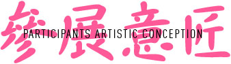
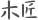
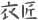
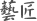

梵几
- 梵几——設計師家具品牌（當代中國獨立家具品牌中，最具代表性的家具品牌之壹），由設計師高古奇成立於2010年。做實用，堅固，耐用且美的日常家具，致力於打造符合當下國人生活的家具是梵几自始自終追求的品牌理念。“梵”是凈空與安靜的意思，“几”是家具，意為凈空安靜的家具，同時梵幾的諧音是“凡几”——平凡的家具。做些實實在在為生活所用，並自然融合在生活當中的家具，這就是梵几的哲學。
哲品
- 東方生活品牌。哲品品牌價值是信賴、設計、正品、友善、以當代東方精神為核心，倡導東亞地區無國界、同文化、和諧的新東方生活理念；以創新設計現代生活用品為形，承載東方的生活智慧，提供適合現代人的全套家居生活解決方案；致力將東方生活方式承載發揚，將“新東方”價值觀輸入全球，成為具有“東方生活智慧”的家居用品公司。“哲品茶聽”與“哲品時間”是ZENS旗下時尚東方生活體驗平臺。哲品因循對東方傳統文化的尊重，與對新時代的熱情，通過對器物的創新設計，是東方文化重返當代生活。哲品集聚深諳東方生活智慧的各國籍各領域設計師，以“超級平衡”的設計態度，形成東方與西方的和諧對話，傳統與現代的詩意融合。哲品籍由壹件件“妙思、當下、簡易”的器物，將“自然於心”的生活方式帶給每個使用者，並以此觀照與重構人與器物，人與人，人與自然，人與自我的關系。哲品以其東方設計的價值，讓世界看見！
黑川雅之
- 黑川雅之（Masayuki Kurokawa），被稱為日本設計圈的“達芬奇”，更是開創日本建築與工業造型設計新時代的教父級人物。 多年來，他以“生命與性”的哲學理念為永恒的設計主題，充分展現著獨有的“自然主義”思想，在其作品中有著對人與情的重視，承載著東方藝術之美，更帶著人情、自然的余溫。東方哲學源於禪思想，加上黑川雅之的自然之道，體現人與情的設計，將把東方文化推向世界。ZENS是以禪的思想為背景創設的。Z是禪字的英文首字母，ZK的K是KUROKAWA（黑川）的K。我的思想是學習了中國自古以來的自然思想，可以說ZK就是禪與自然思想融合而成的思想。面向世界，通過ZENS品牌把禪的思想以及黑川雅之思想結合起來，把自然思想和禪思想推向全世界。我認為，ZK在這點上，會與我們的子孫後代建立更牢固的聯系。
素元
- 獨立傢具品牌“素元”由設計師武巍先生創立於2011年。素元傢具秉承自然、雋永、人性化、可持續的設計理念，追溯人們生活的初始訴求，研究和探尋滿足人們內在需求的解決方案。兩位主創設計師均為德國紅點獎、德國IF大獎及諸多國內設計獎項獲得者。素元提倡生活放慢、居住留白，在現代忙碌中尋求寧靜自如的生活意境，這種追求也自然而然地體現於素元的傢具設計中：把傳統元素去繁化簡，創造出簡約而富有細節、可雋永流傳的美好傢具。
蔡德全
- 蔡德全樸實主義藝術家 、鐵匠鋪拯救計劃發起人， 現居北京，從事繪畫及金屬藝術品創作二十餘年，2012年底正式成立小小鐵匠鋪開始了《鐵匠鋪的藝術拯救計劃》至今已進行了第三個年頭。蔡德全提出的樸實主義藝術提倡的是藝術家以身體力行的方式進行藝術創作，而不是靠助手和團隊和投機等手段來創作作品，藝術應該是思想和現實手作的完美結合，樸實主義藝術講求的是實實在在的做事態度，藝術家一定要與現實結合通過身體力行的方式創作藝術作品，處事平和低調，講求勞作的快樂，穿布衣種菜蔬低碳環保，物品盡量重複利用，做集市，與民同樂。 蔡德全已經成為中國民間手工藝保護及革新的最重要人物。
蔡瀾的花花世界
- 蔡瀾花花世界，開拓您的視野。我們的產品來自世界各地，全部由《舌尖上的中國》總顧問-蔡瀾先生親自挑選，務求將世界各地的優質產品，呈現在各位眼前。同時，我們也監製了一系列古法產品，希望將逐漸滅絕的美好東西保留下來。希望大家喜歡。
STUDIO 4℃
- 日本最先鋒的動畫電影藝術先行者，由動畫天才森本晃司、田中榮子於1986年創立，以“做出比一般動畫更高密度、更高質量”為創作標準,推出過《AKIRA》、《黑客帝國動畫版》、《惡童》等受到極大好評的動畫作品。STUDIO 4℃的作品以天馬行空的想象力、流暢的動畫效果、強烈的個性著稱，是日本唯一不以市場為導向的動畫公司。
Fei Liu Jewellery
- Fei Liu品牌由世界十大珠寶設計師之一的劉斐先生創立，自2002年成立以來，Fei Liu便展示了它挑戰傳統的設計理念。作品注重細節，體現整體生動性和視覺享受，其設計無疑是唯一而獨特的精品。設計聚焦於色彩，大膽創意引領時尚，在展現佩戴者女性柔美的同時，更為突顯出與眾不同的個性。目前已進入各國的高端百貨公司，例如英國的Harrods，美國的Neiman Marcus，日本的Mitsukoshi，Takashimaya等。曾多次獲得國際獎項的珠寶品牌設計師Fei Liu先生，以其生動別緻的設計，屢屢衝擊着人們對珠寶設計的傳統概念，並重新定義了高端珠寶的精髓。Fei Liu設計在以優雅的造型設計配以顏色豐富的寶石而著稱的同時，完美結合了視覺衝擊與精湛的製作工藝；而其個性突出的設計，使佩戴者在各種場合都閃耀奪目。
藝集
- 成立于2004年,致力于将生活与艺术融合，让生活艺术化,让艺术生活化；运营的线上微社群，是最活跃的艺术微拍群之一，开启了众多网友的第一次艺术品收藏；位于798艺术区的艺集空间组织过过众多个展及群展；艺集商城致力于从全世界搜集具有生活美学和艺术气息的原创美物；也与艺术家、设计师合作设计生产艺术衍生商品。从2015年开始，艺集推出了系列艺术原创项目，致力于孵化更多具有艺术气质的IP项目。继2015年推出小怪兽项目之后，2016年已推出了水彩画家子洛的重绘《诗经》，艺术家张占占和网友们共同创作的第一个带有剧情的绘画作品“小野兽养成记”，以及李南南和曲晶的陶艺作品。
bi.du.haev
- 我們建立一種滴漏式咖啡的簡單概念設計。 在這個無限可能的領域中，我們實驗與創造最簡單化的實用功能。 無必要性的設計對我們而言，不僅是多餘的，也阻礙了概念的持續發展。 回歸最基本的功能，最大簡化的造型，與環保，也已然成為我們的座右銘。 [bi.du.hæv]英文音標發音，單字組合為Be - Do - Have。 器物本身是有趣的。設計器物與製造器物，在一群設計師與一群工匠經由創意碰撞之後而呈現的作品，更是有着極大的魅力。 或許我們求的，不是那如同製造業般的分毫精準接合，也不是精確計算流體力學或是按着磅秤看着碼錶僵着手控制流速為求比昨天的味道更好的思維。 如果您欣賞[bi.du.haev] 起床後揉着睡眼，隨手抓一把咖啡豆，隨性地沖煮一杯屬於自己的早晨，不用算計，不必太過在意世事，隨着當下的溫度，光線和情緒，品味着屬於自己的手感釀造。 Be - Do - Have，這就是我們想與您分享的生活態度。
*排名不分先後
- angs lookbooks
- tiantang jewellery
- tournaire
- ZOEZONG
- 轻饰
- 张小川
- 黑川雅之
- 融rone
- 银殊
- 尤目
- 黑川雅之
- 黑川雅之
- 黑川雅之
- 黑川雅之
- 黑川雅之
- 黑川雅之
- 黑川雅之
- 黑川雅之
- 黑川雅之
- 黑川雅之

*排名不分先後
- 不然
- 器安木作
- 山舍
- 失物招领
- 未
- 长久木
- 黑川雅之
- 黑川雅之
- 黑川雅之
- 黑川雅之
- 黑川雅之
- 黑川雅之
- 黑川雅之
- 黑川雅之
- 黑川雅之
- 黑川雅之
- 黑川雅之
- 黑川雅之
- 黑川雅之
- 黑川雅之
*排名不分先後
- Defront
- TMB混茶
- 打蛋先生
- 蜜麻花
- 乐纯酸奶
- 站
- 那式生活
- 若谷
- 吴酒
- 黑川雅之
- 黑川雅之
- 黑川雅之
- 黑川雅之
- 黑川雅之
- 黑川雅之
- 黑川雅之
- 黑川雅之
- 黑川雅之
- 黑川雅之
- 黑川雅之
*排名不分先後
- CIGA Design
- 疵点
- 单向空间
- 东匠
- 慢物质
- 一般工作室
- 意外设计
- 有礼有节
- 质造
- 痣
- 品那儿
- 拓草手作
- 衍物
- 自然造物
- 黑川雅之
- 黑川雅之
- 黑川雅之
- 黑川雅之
- 黑川雅之
- 黑川雅之

*排名不分先後
- A-ONE
- BY SWEN
- LUCIEN WANG
- Reclothing Bank
- Rfactory
- SHINE LI
- Tang' Roulou
- 成当代艺术中心
- 归了
- 没边
- 晏
- 黑川雅之
- 黑川雅之
- 黑川雅之
- 黑川雅之
- 黑川雅之
- 黑川雅之
- 黑川雅之
- 黑川雅之
- 黑川雅之

*排名不分先後
- 6HL6
- arttoy culture
- impossible
- LUNEVILLE
- MOBOH
- 东韵
- 如果艺术
- 飒蜜和熊
- 手扎蓝染
- 纸品的美好
- nothing studio
- Scarfskin
- 本加设计
- 黑川雅之
- 黑川雅之
- 黑川雅之
- 黑川雅之
- 黑川雅之
- 黑川雅之
- 黑川雅之